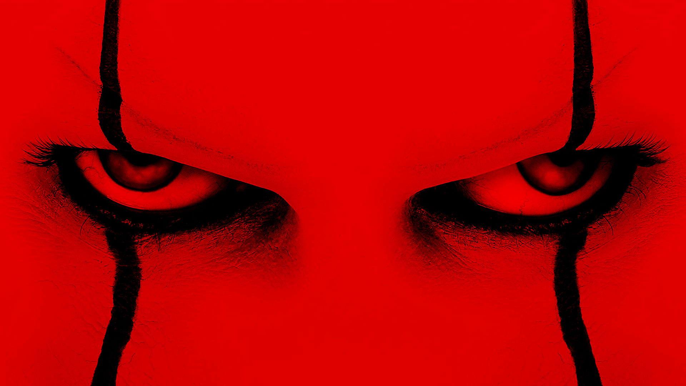
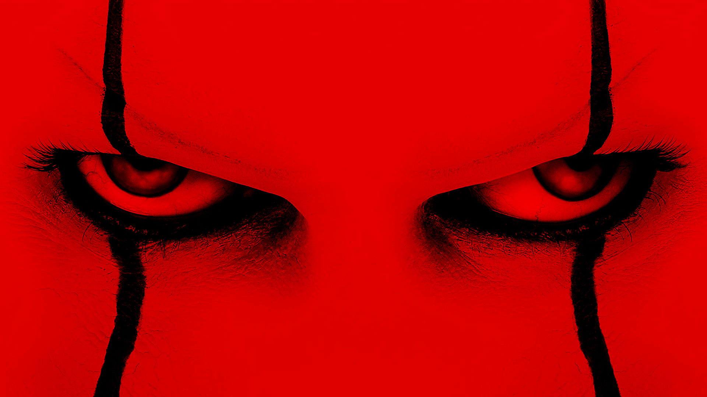

1. Five Night At Fready:Movie
2. The Conjuring: Ma xui quỷ khiến(phần 3)
3. THE NUN 2
4. Halloween Kills
5. Chú hề ma quái 2
6. Annabelle Comes Home
7. Sinh nhật chết chóc (Happy death day)
8. The Conjuring 1
9. Trick or Treat
TOP CÁC BỘ PHIM KINH DỊ BẠN NÊN XEM VÀO MÙA HALLOWEEN


 


Xin chào mọi người,hôm nay mình sẽ giới thiệu cho mọi người về những bộ phim đáng xem vào mùa halloween năm 2023(Lưu ý:Trong này sẽ có cả các bộ phi sắp ra và đã ra mắt rồi nên để có một trải nghiệm phim tốt nhất thì mình sẽ chỉ ghép trailer vào thôi nhé :333)
Xem nhanh:
1.Five Night At Fready:Movie
Five Nights at Freddy's (Tiếng Việt: Năm Đêm Kinh Hoàng) là một bộ phim kinh dị siêu nhiên của Hoa Kỳ được Emma Tammi đạo diễn từ kịch bản mà cô cùng viết với Scott Cawthon và Seth Cuddeback. Được sản xuất bởi Blumhouse Productions và Striker Entertainment, bộ phim được dựa trên loạt trò chơi điện tử cùng tên được sản xuất bởi Cawthon, một trong những tượng đài game kinh dị của thế giới.
Five Nights at Freddy's dự kiến được phát hành bởi Universal Pictures đồng thời tại các rạp và trên nền tảng trực tuyến Peacock tại Hoa Kỳ vào ngày 27 tháng 10 năm 2023.
Trailer phim:
2.The Conjuring: Ma xui quỷ khiến(phần 3)
The Conjuring: Ma xui quỷ khiến (tên gốc tiếng Anh: The Conjuring: The Devil Made Me Do It) là một bộ phim kinh dị siêu nhiên năm 2021 của Mỹ, được đạo diễn bởi Michael Chaves từ một kịch bản của David Leslie Johnson-McGoldrick. Bộ phim sẽ đóng vai trò là phần tiếp theo của Ám ảnh kinh hoàng (2013) và Ám ảnh kinh hoàng 2 (2016), và là phần thứ tám trong Vũ trụ The Conjuring.Bộ phim đã thu về 201 triệu USD so với kinh phí 39 triệu USD và nhận được nhiều đánh giá trái chiều từ giới phê bình.
Trailer phim:
3.The NUN 2
Ác quỷ ma sơ 2 là một bộ phim điện ảnh Mỹ thuộc thể loại kinh dị siêu nhiên do Michael Chaves làm đạo diễn, với phần kịch bản do Akela Cooper, Ian B. Goldberg và Richard Naing chấp bút dựa trên cốt truyện của Cooper. Là phần tiếp theo của Ác quỷ ma sơ (2018) và đồng thời là phần phim thứ chín thuộc Vũ trụ The Conjuring. Ác quỷ ma sơ 2 được công chiếu vào ngày 8 tháng 9 năm 2023 tại Mỹ và Việt Nam, do Warner Bros. Pictures phát hành. Sau khi ra mắt, bộ phim nhận về những lời nhận xét trái chiều từ giới chuyên môn.
Trailer phim:
4.Halloween Kills
Bộ phim Halloween Kills là phần tiếp theo của phim Halloween (2018). Nội dung kể về nhân vật Laurie Strode phải trải qua cuộc chiến với tên sát nhân Michael Myers. Gã sát nhân tâm thần Michael Myers đã giết hại hàng loạt người và làm cả thị trấn hoang mang. Hắn ta luôn truy sát, hành hạ và giết người một cách tàn bạo nhất. Phim nhấn mạnh yếu tố kinh dị, ghê gớm bởi máu me, không quan tâm đến yếu tố logic và nhân vật chỉ là tên điên máu lạnh chứ không hề có những cảm xúc khác. Tín đồ của điện ảnh yêu thích cảm giác ghê rợn có thể xem qua bộ phim này. Bộ phim đã được công chiếu tại Mỹ từ 15/10 và đạt doanh thu cao nhất nhì phòng vé.
Trailer phim:
5.IT 2(Chú hề ma quái 2)
Gã hề ma quái 2 (tựa tiếng Anh: It Chapter Two) là một bộ phim kinh dị siêu nhiên năm 2019 của Mỹ và là phần tiếp theo của It (2017). Cả hai bộ phim được dựa trên cuốn tiểu thuyết cùng tên năm 1986 của nhà văn Stephen King. Phần phim thứ hai dựa trên nửa sau của cuốn tiểu thuyết và được đạo diễn bởi Andy Muschietti và biên kịch bởi Gary Dauberman. Lấy bối cảnh năm 2016, 27 năm sau các sự kiện từ năm 1988-1989 trong phần phim đầu tiên. Bộ phim đã thu về 438 triệu đôla trên toàn thế giới và nhận được nhiều ý kiến trái chiều từ các nhà phê bình, những người khen ngợi diễn xuất của các diễn viên (đặc biệt là Hader và Skarsgård) và chủ đề phim nhưng chỉ trích về thời lượng quá dài và không đáng sợ bằng phần trước. Sự trung thành của bộ phim với nguyên tác tiểu thuyết cũng gây ra những phản ứng phân cực.
Trailer phim:
6.Ác quỷ trở về (Annabelle Comes Homes)
Annabelle: Ác quỷ trở về (tiếng anh: Annabelle Comes Home) là một bộ phim kinh dị siêu nhiên của Mỹ năm 2019 do Gary Dauberman đạo diễn, trong tác phẩm đầu tay của ông, từ kịch bản của Dauberman và một câu chuyện của Dauberman và James Wan, người cũng đóng vai trò là nhà sản xuất với Peter Safran. Nó đóng vai trò là phần tiếp theo của Annabelle 2014 và Annabelle: Creation năm 2017, và là phần thứ bảy trong Vũ trụ kinh dị Conjuring.Annabelle Comes Home đã được phát hành tại Hoa Kỳ vào ngày 26 tháng 6 năm 2019. Bộ phim nhận được nhiều ý kiến trái chiều từ các nhà phê bình và đã thu về 228,6 triệu đô la trên toàn thế giới.
Trailer phim:
7.Sinh nhật chết chóc (Happy death day)
Sinh nhật chết chóc (tựa tiếng Anh: Happy Death Day) là một bộ phim kinh dị bạo lực Mỹ do Christopher B. Landon đạo diễn và Scott Lobdell viết kịch bản. Hai diễn viên chính là Jessica Rothe và Israel Broussard. Bộ phim được sản xuất bởi Jason Blum thông qua hãng phim Blumhouse Productions của ông. Phim kể về một cô sinh viên đại học bị giết vào ngày sinh nhật của cô, và sau đó cô bắt đầu hồi tưởng lại ngày qua ngày; vào thời điểm đó, cô đặt ra cách ngăn chặn cái chết của mình và tìm ra kẻ giết người.
Bộ phim được phát hành vào thứ sáu ngày 13 tháng 10 năm 2017, bởi hãng Universal Pictures. Phim đã nhận được những bình luận tích cực, với những người phê bình cho rằng phim thú vị trong khi thừa nhận tiền đề quen thuộc, và mô tả phim như Groundhog Day giao thoa Scream. Đặc biệt trong phim có sử dụng một ca khúc nhạc trẻ Việt Nam mang tên "Số nhọ", do nhạc sĩ Huỳnh Hiền Năng sáng tác và nhóm nhạc Lip B thể hiện.
Trailer phim:
8.Ám ảnh kinh hoàng (The Conjuring)
Ám ảnh kinh hoàng (tựa tiếng Anh: The Conjuring) là một bộ phim kinh dị siêu nhiên của điện ảnh Hoa Kỳ công chiếu vào năm 2013 do James Wan làm đạo diễn. Hai diễn viên Vera Farmiga và Patrick Wilson vào vai Ed và Lorraine Warren, họ là những nhà điều tra các hiện tượng siêu nhiên xảy ra trên nước Mỹ. Những báo cáo của họ còn truyền cảm hứng cho cuốn tiểu thuyết Amityville Horror. Trong phim hai vợ chồng Warren là những người điều tra các hiện tượng siêu nhiên, họ đến để hỗ trợ gia đình Perron (Ron Livingston và Lili Taylor) đang trải qua các sự kiện ngày càng đáng lo ngại trong trang trại của họ ở Harrisville, Rhode Island vào năm 1971.
Trailer phim:
9.Mặt nạ bí ngô (Trick 'r Treat)
Trick 'r Treat là một bộ phim kinh dị Mỹ năm 2007 do Michael Dougherty viết kịch bản và đạo diễn. Trung tâm phim xoay quanh bốn câu chuyện đáng sợ liên quan đến Halloween. Một yếu tố phổ biến mà những câu chuyện quan hệ với nhau là sự hiện diện của Sam (Quinn Lord), cậu bé khoảng 10 tuổi mang mặt nạ hình trái bí biểu tượng của Halloween, cậu mặc bộ đồ ngủ màu cam tồi tàn mang theo một bao bố, cậu luôn xuất hiện trong tất cả những câu chuyện và bất cứ khi nào một người nào đó vi phạm truyền thống Halloween.
Mặc dù bị trì hoãn trong hai năm và bị phát hành rất hạn chế, nhưng bộ phim nhận được rất nhiều đánh giá tích cực, quan trọng nhờ đó phim thu hút được 1 sự quan tâm mạnh.
Trailer phim: